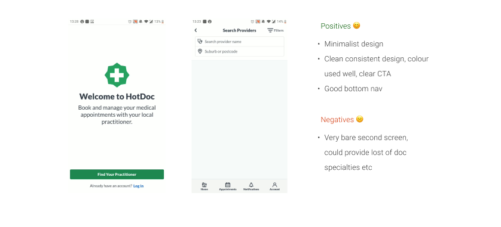

Project Summary
I was recently looking for a doctor in a new city and came across Doctolib - great service offered to
patients. I enjoyed using their website but found
that I did not have such a great user experience on the app. I had some of my own ideas that I wanted to
test out and so I decided to redesign the "Search" feature of the Doctolib App.
My Role
UX/UI Researcher and Designer
Tools Used
(Figma, SurveyMonkey,
Miro, Letsview)
I stared with gathering information to form some ideas, questions and
observations about the product.
My main research objectives:
- Understand the Doctolib problem
- Find existing solutions understand how widely available these type of apps are
- Look into the features the apps offer focusing on the 'Search' function
- Understand current user behaviour/demand
I examined the Homescreen first and then began to test the Search function to see what features are offered to the user.
Summarised Doctolib Problem
Unfortunately, I found more negatives than positives in the Doctolib user experience, it did not feel
like a
very intuitive app to me. The good thing was that I had lots to work on!
No option to select location on Homescreen which can confuse users what criteria to search by. The search appears to be country-wide as the first result returned to me was Munich. Once "Near Me" is clicked, returns error. There is no map view offered and the distance from the location I selected is also not indicated
Too much text everywhere, however there very little information about the doctor's practice, it does not offer ratings any other info about the doctors
A list of specialization categories would be very useful here
User has to click on the text field for the keyboard to appear when it could appear automatically (excluding the first step of user workflow)
Filter feature can be positioned better - made more obvious, some of the filter options could be at the top of the screen)
I began to search for
other doctor booking apps, focusing on the 'Search'
capabilities, I
wanted
to answer questions like:
- What is the experience like?
- What is the search like, how easy is it to
filter my search results? What filter options are there?
- How
relevant are the doctors the app is suggesting to me?
- What
information I am being given about doctor's services? How does geotargeting look?
I found a few solutions, amongst which is one mobile site. I included this in my research because
I
felt it has some excellent features and offers a great user experience! I felt that although it is not
an
app, it's definitely worth taking notes from these guys.
I firstly looked at the Homescreens to understand what
the user sees when they
open the
app and how the user might access the 'Search' from the Homescreen.
I
wanted to see what common features these apps had and how I could use my findings in my
redesign.
My Findings - Homescreen
Doctolib, Homescreen (Available in UK only)
HotDoc, Homescreen (Available in Australia)

Docplanner Group - Znanylekarz, Homescreen (Available in Poland)
After having a look at the Homescreens, I began to look at the 'Search' in more detail. I highlighted some
good and some bad features of the Search function and the Search
Results as well as looking at interactions
with the input fields.
My Findings - Search
Features of Search
Features of Search
Features of Search Results
Search Form Interactions
Summarised Benchmarking Analysis
Contains 4/5 destinations such as "account, messages, appointments" at the bottom of the screen, consistent and accessible. Some apps hide the bottom navigation after the user leaves the Homescreen, so user has to user "nack" arrow to return.
I can see that in HotDoc, user can only search by "provider name", which can cause friction for the user. Once you start typing into the search field, no categories appear > overwhelming and unclear for someone who does not know a doctor in the area. We are used to searching by location so when user does not see the option to select a location it is confusing.
This makes it easier for the user to search in case they want to just select the doctor specialization
"Search provider by name" is highly user unfriendly and causes confusion. We must strive for software to be friendly and polite.
I found it quite surprising that none of the apps offered the option to change the language. I think we must make our software inclusive and accessible.
I found that in some apps, in the Search Results some filtering options such as "near me, ratings," already were included. This is good practice as they're the most important aspects for the user and they don't have to go to the trouble of digging through the filter options to find what they need.
The apps that offer a "rating" or "recommendation" are more reassuring for users and build confidence for the user.
In all the apps and mobile site I examined, I felt like Doctolib was the last in the usability race.
I collected responses from 27 participants and wanted to find out the following:
- Habits around
doc
appointment booking
- Availability of these apps
- People's openness/perceptions to using these
apps
- Problems encountered with these apps
Summarised Survey Results
This is a good indicator, people are changing their behaviours and are booking appointments online rather than the traditional way via practice by phone. A slightly higher percentage of people are using apps than desktop.
Not all users are willing to use apps to complete this task, some people do not want to download extra
apps that they only use once a year, some people have their doctors in their contacts and it's easier
for them to call.
However some of the points highlighted by people who would not use apps are
related to
past bad experience. It was mentioned that one user wanted to find out when the
next earliest appointment
availability was
which is why they called - this solution can be provided in the app.
Some people prefer to speak
to someone and hear a voice, which indicates a need for reassurance and confirmation. This is also
something that can be solved through the app. More reassurance can be provided by the software.
This is a good indicator, people are changing their behaviours and are booking appointments online rather than the traditional way via practice by phone. A slightly higher percentage of people are using apps than desktop.
To the majority of people, such an app is either unavailable or there's a lack of awareness. I found this to be an issue in my own research too, there were very few solutions out there available.
In general people seem open to using an app to book their doc appointments but the apps out there have some issues. that need to be tackled - users need more accurate and more relevant info in their search results with information about their doctors and availability of appointments, a clearer booking process and a better way to store their documents.